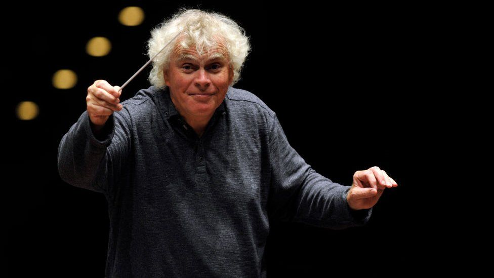

Simon Rattle
Sir Simon Denis Rattle OM CBE (born 19 January 1955) is a British conductor. He rose to international prominence during the 1980s and 1990s, while music director of the City of Birmingham Symphony Orchestra (1980–1998). Rattle was principal conductor of the Berlin Philharmonic from 2002 to 2018. He is currently music director of the London Symphony Orchestra, since September 2017. Among the world's leading conductors, in a 2015 Bachtrack poll, he was ranked by music critics as the world's second best living conductor.
Rattle is also the patron of Birmingham Schools' Symphony Orchestra, arranged during his tenure with CBSO in mid 1990s. The Youth Orchestra is now under the auspices of charitable business Services for Education. He received the Brit Award for Outstanding Contribution to Music in 2001 at the Classic Brit Awards.
Musical Styles and Recordings
Rattle has conducted a wide variety of music, including some with period instruments (either modern musical instruments whose design is similar to that of instruments commonly in use at the time the piece was composed or the actual historical instrument itself), but he is best known for his interpretations of late 19th- and early 20th-century composers such as Gustav Mahler, with a recording of Mahler's Second Symphony winning several awards on its release. He has also championed much contemporary music, an example of this being the 1996 TV series Leaving Home, where he presents a 7-part survey of musical styles and conductors with excerpts recorded by the CBSO.
Other recordings in Berlin have included Dvořák tone poems, Mahler's Symphony No. 9 and Claude Debussy's La Mer. The Gramophone Magazine praised the latter as a "magnificent disc" and drew favourable comparisons with interpretations of the piece by Rattle's immediate predecessors, Claudio Abbado and Herbert von Karajan. He has also worked with the Toronto Children's Chorus. Rattle and the BPO also recorded Gustav Holst's The Planets (EMI), which was the BBC Music Magazine Orchestra Choice. In addition, Rattle's acclaimed complete 1989 recording of George Gershwin's opera Porgy and Bess was used as the soundtrack for the equally acclaimed 1993 television production of the work. It was the first made-for-television production of Porgy and Bess ever presented. Rattle's 2007 recording of Johannes Brahms's Ein deutsches Requiem received praise from BBC Music Magazine, as "Disc of the Month" for April 2007, "as probably the best new version of the Requiem I've heard in quite some years". Rattle and the BPO have also released recordings of Anton Bruckner's Fourth Symphony (Romantic), and Joseph Haydn's Symphonies Nos. 88, 89, 90, 91, 92 and Sinfonia Concertante.